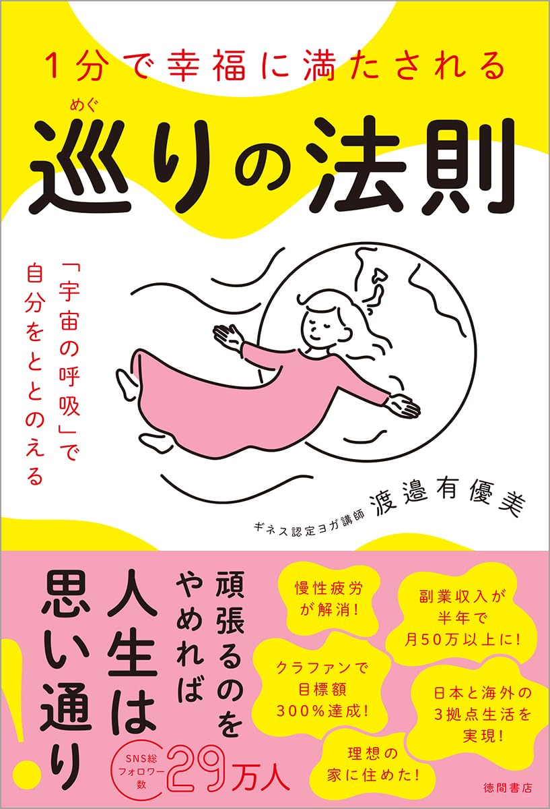

今回の対談者をご紹介します
 メイン講師
メイン講師
パフォーマンス × 余白設計 × 睡眠

角谷リョウ
Sumiya Ryo
パフォーマンスコーチ / 株式会社LIFREE共同創業者 / 睡眠・超回復研究所所長
- 160社・16万人のパフォーマンスを改善
- 上級睡眠健康指導士 / 日本スポーツ協会公認スポーツ指導者
- 認知行動療法・環境設計ベースの「余白が成果を生む」メソッド確立
- テレビ・雑誌などメディア出演多数
大手企業を中心に計160社・累計16万人を超えるビジネスパーソンのパフォーマンスを改善。成果を出し続けるリーダーたちの共通点として、「頑張りすぎない24時間の設計」の重要性に着目。認知行動療法や環境設計をベースにした「余白が成果を生む」メソッドにより、多くのビジネスパーソンの慢性的なパフォーマンス低下を根本解決してきた。
著書
仕事の質を高める休養力
フォレスト出版
ゲスト講師
ヨガ × 捨てる力 × 純度高く生きる
渡邉有優美
Watanabe Ayumi
ヨガ講師・著者・ギネス世界記録保持者 / 株式会社ARN GLOBAL代表
- 20年以上・延べ1万人以上にヨガを指導
- SNS動画累計再生数2億回突破・総フォロワー29万人超
- ギネス世界記録保持：開脚前屈ポーズ最長保持（1時間5分16秒）
- 著書Amazonランキング6冠・発売前重版
- 講演実績：ソニー、自治体、教育機関、全国神社など多数
独自に確立した「1分体操」は「動きやすくなる・前向きになれる・人生が好転する」と評判を呼び、SNSでの動画累計再生数は2億回を突破。パンデミックによって長年続けてきたアパレル13店舗が閉店、仕事ゼロの日々を経験。そこからSNS発信を開始し「運動は運を動かす」を信条に完全再起。身体・感情・脳科学を融合した独自メソッド「純度高く生きる」は、全国で支持を集め続けている。

著書
1分で幸福に満たされる 巡りの法則
徳間書店